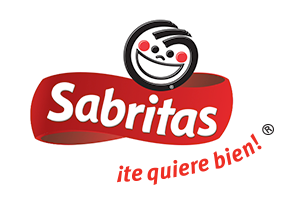
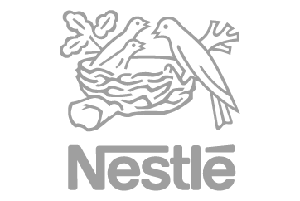

ENIGH - INEGI
La Encuesta Nacional de Ingresos y Gastos de los Hogares (ENIGH) es un censo preparado por el INEGI que describe cómo es que los hogares mexicanos distribuyen sus ingresos. En esta hay bastante información que puede ser resumida en una visualizaicón.

Sabritas
Sabritas es una empresa agroindustrial creada en 1943 y es líder en el mercado de botanas y alimentos. Con la ayuda de Las Quince Letras descubrió patrones interesantes en el comportamiento de sus clientes.

Nestlé
Nestlé nos preguntó si podríammos determinar automáticamente cuáles llamadas de su call center preguntaban por productos para bebé. Mira lo que L15L logró y cómo tu organización podría beneficiarse